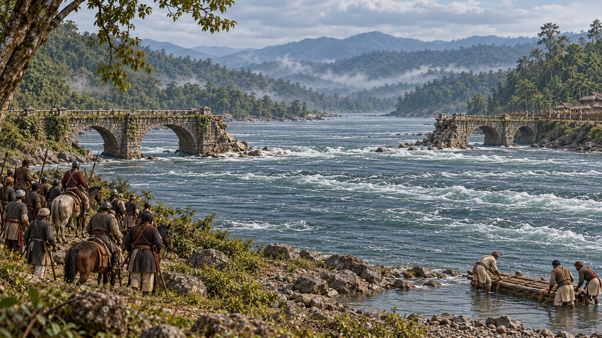

KAMATA-01 · c. 1185
A Land Grant in a Splintered Kamarupa
local review draft
KAMATA-02 · March 1206
Ali Mech Guides Bakhtiyar Khalji's Horsemen
local review draft
KAMATA-03 · 1206
The Broken Bridge on the Teesta
existing published image
KAMATA-04 · 1226–1228
Iwaz Khalji Is Turned Back Near Nagaon
local review draft
KAMATA-05 · 1228
Nasiruddin Mahmud Crosses into Kamrup
local review draft
KAMATA-06 · c. 1229–1250
Sandhya Stops the Tribute
local review draft
KAMATA-07 · Early spring 1257
Yuzbak Occupies an Empty Kamarupanagara
local review draft
KAMATA-08 · Spring and monsoon 1257
Sandhya Floods the Plain
local review draft
KAMATA-09 · c. 1257–1260
Sandhya Becomes Kamateswara at Kamatapur
local review draft
KAMATA-10 · 1321–1322
The Kacharis Turn Back Bahadur Shah
local review draft
KAMATA-11 · c. 1330
Durlabhnarayan and Dharmanarayan Divide the Kingdom
local review draft
KAMATA-12 · c. 1330–1350
Chandivara's Fourteen Families Settle at Langamaguri
local review draft
KAMATA-13 · c. 1330–1350
Hema Saraswati Recites the Prahlada Charita
local review draft
KAMATA-14 · c. 1330–1370
Madhav Kandali Writes the Saptakanda Ramayana
local review draft
KAMATA-15 · 1356–1357
Ilyas Shah Takes Guwahati
local review draft
KAMATA-16 · 1362
Sikandar Shah Met at Gachtal
local review draft
KAMATA-17 · c. 1365
Arimatta Seizes the Throne
local review draft
KAMATA-18 · c. 1440
Kanta Nath Rises as Niladhwaj, First of the Khen Kings
local review draft
KAMATA-19 · c. 1449–1460
A Bhuyan Boyhood at Alipukhuri
local review draft
KAMATA-20 · c. 1480–1498
Nilambar's Kamatapur
local review draft
KAMATA-21 · 1492–1493
Muzaffar Shah's Coins: Kamata Mardan
local review draft
KAMATA-22 · c. 1498
Sachipatra's Grievance
local review draft
KAMATA-23 · 1498
The Siege of Kamatapur
local review draft
KAMATA-24 · 1502
Danyal Governs from Hajo
local review draft
KAMATA-25 · c. 1505–1510
The Bhuyans Destroy Danyal's Garrison
local review draft
KAMATA-26 · c. 1509–1515
Bisu Defeats the Bhuyan of Karnapur
local review draft
KAMATA-27 · 1515
Bisu Is Crowned Biswa Singha
local review draft